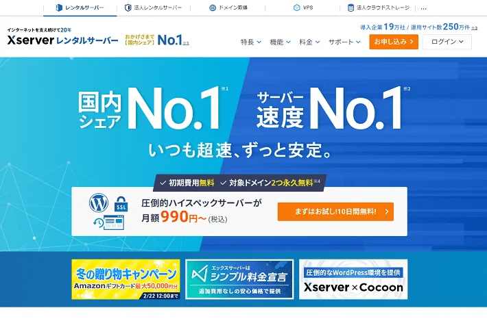
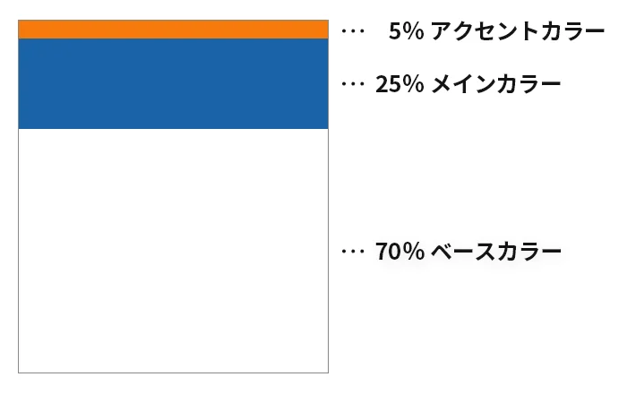
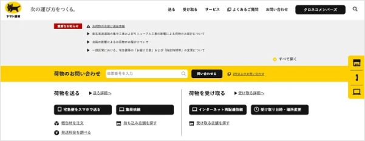
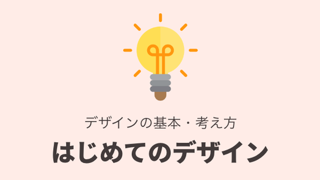
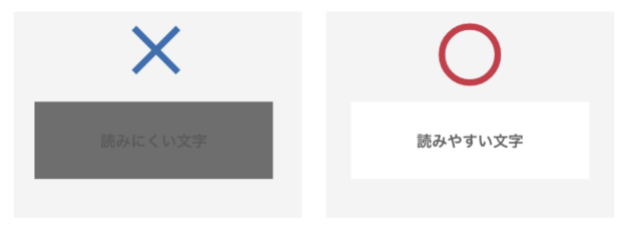

色を使い過ぎると情報が散乱して、Webサイトを見ている人に本当に見てほしいところを見てもらえなくなってしまう。必要最低限の色数に絞ること
絞った色の中でベースの色70％、メインの色25％、アクセントの色5％の割合で配色すると、美しく統一感のあるデザインになるといわれている
アクセントカラーの使い過ぎに注意！
例：エックスサーバーのWebページの場合

エックスサーバー公式サイトの配色
メインカラー・・・青色
ベースカラー・・・白色
アクセントカラー・・・オレンジ色

「白は清潔なイメージ」、「緑は安心・安全なイメージ」など、色にはそれぞれ心理的な効果を与える力があるといわれている
いろいろな会社には特有の色がある。その色のことをコーポレートカラーやブランドカラーという。例えば、ヤマト運輸のコーポレートカラーは何色か？

企業も会社のイメージによってWebサイトやパッケージの色などを決めています。
同じように個人についても、その人からイメージされる色があります。
※カラーコードとは...6桁の16進数で表記される色番号のこと。番号の前に「#」を付けます。
（例）白「#FFFFFF」、黒「#000000」など
活動3で探した、パーソナルカラーからベース/メイン/アクセントカラーを探そう。
メインカラー（先に決めたパーソナルカラー）
主張したい色（ホームページの印象はこの色で決まる）
ベースカラー
最も使用する面積が多いホームページの基礎となる色
アクセントカラー
刺激や変化を与えるための色
palettemaker（パレットメーカー）
『palettemaker』は、配色をデモサイトでプレビュー（確認）できるツール。
配色を提案してくれるだけでなく、色数も変更できるため、よりイメージに近づけながら確認できる。
このツールでベース/メイン/アクセントカラーを探す。
https://palettemaker.com/

色について確認しておきましょう
https://chot.design/concept-of-design/991f0145bd9b/
3−1.カラーホイール（色相環）
3−2.色の三属性
3-3.色の分類
3-4.色の持つイメージ
3-5.色の見え方
3-6.配色のルール
3-7.色の対比
ユーザーの目的を意識してデザインする上で「視認性」「判読性」「可読性」の3つを意識することは重要
視認性
視認性とは、何かを見た際に、対象物自体やその意味合いについて瞬間的に正しく確認し理解できるかどうかの度合いを示し、文章の見やすさを意味する
判読性
判読性とは、数字の「0」とアルファベットの「O」など瞬時に判断しづらいワードについて誤読の少なさの度合いを示し、文章のわかりやすさを意味する
可読性
可読性とは、長い文章でもスラスラ読めるかなど 文章の読みやすさの度合いを示し、読みやすさを意味する
日本語フォントは大きく分けて4つあり、角ゴシック体・丸ゴシック体・明朝体・その他デザインフォントがある
オススメのフォント
https://www.sanzen-design.jp/labo/p6914
フォントのイメージ
https://321web.link/fonts-impression/

前回作ったポートフォリオサイトとでこれらの原則がどこで使われているか調べてみようSANKOU！のサイトでも原則が使われていないか調べてみよう